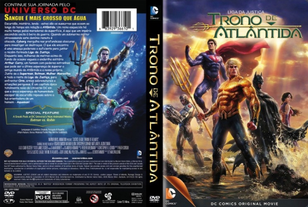

Outro Título:Justice League: Throne of Atlantis
País:United States, 72 minutos
Idiomas falados:Espanhol, Inglês, Português
Gênero(s):Sci-Fi, Ação, Animação, Aventura
Diretor(s):Ethan Spaulding
Escritor(es):Heath Corson
Codec:MPEG-2 (DVD)
Número: 5798


Certificado:12
Sinopse:
Após os eventos de "Liga da Justiça: Guerra”, o Mestre do Oceano e o Arraia Negra declararam guerra contra a superfície em retaliação aos testes com armas realizados pela marinha após a invasão planetária do Senhor de Apokolips, Darkseid. Enquanto isso, a Rainha Atlanna busca pelo seu outro filho, meio-irmão do Mestre do oceano, Arthur Curry, um meio-humano com poderes aquáticos, mas sem o conhecimento de sua linhagem. Mesmo que ele viva com poderes além de sua compreensão, ele percebe os perigos que o cercam e se junta à Liga da Justiça, e junto aos seus novos companheiros ele deve abraçar o seu destino e lutar contra a destruição da Terra.
Elenco:


Tipo de mídia: DVD5,
Legendas: Espanhol, Inglês, Português, Sem Legendas
Alugado: Não
Tela: Anamorphic Widescreen